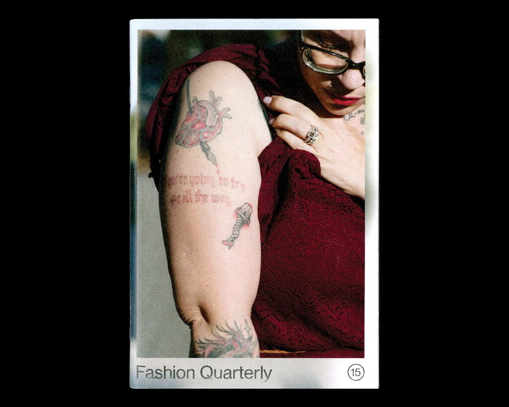
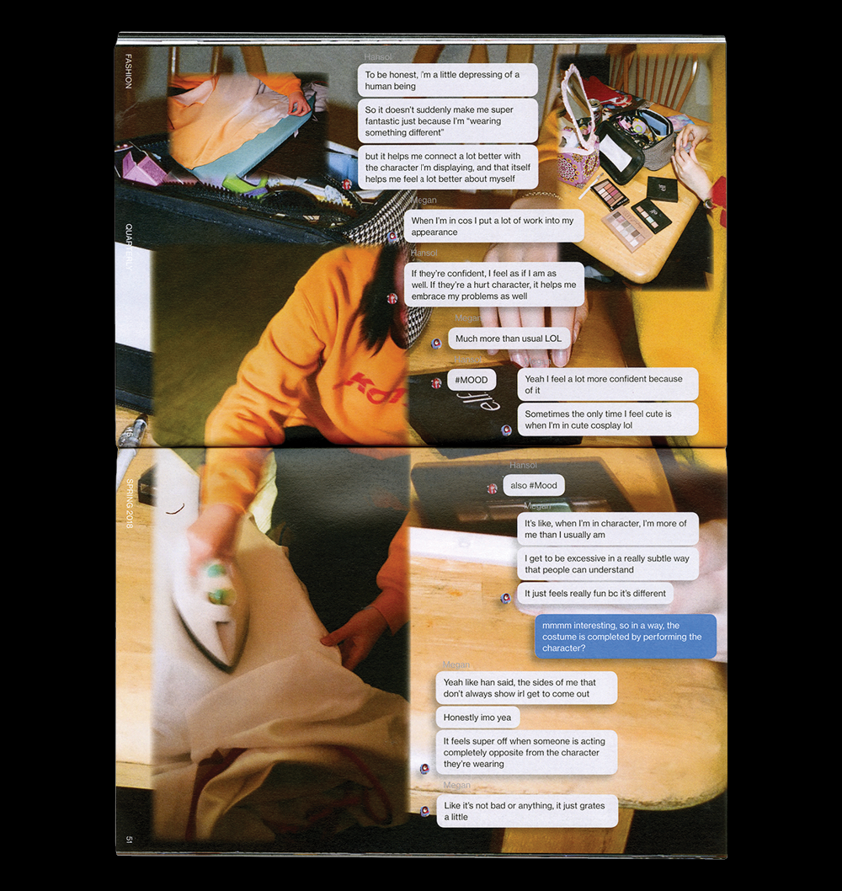
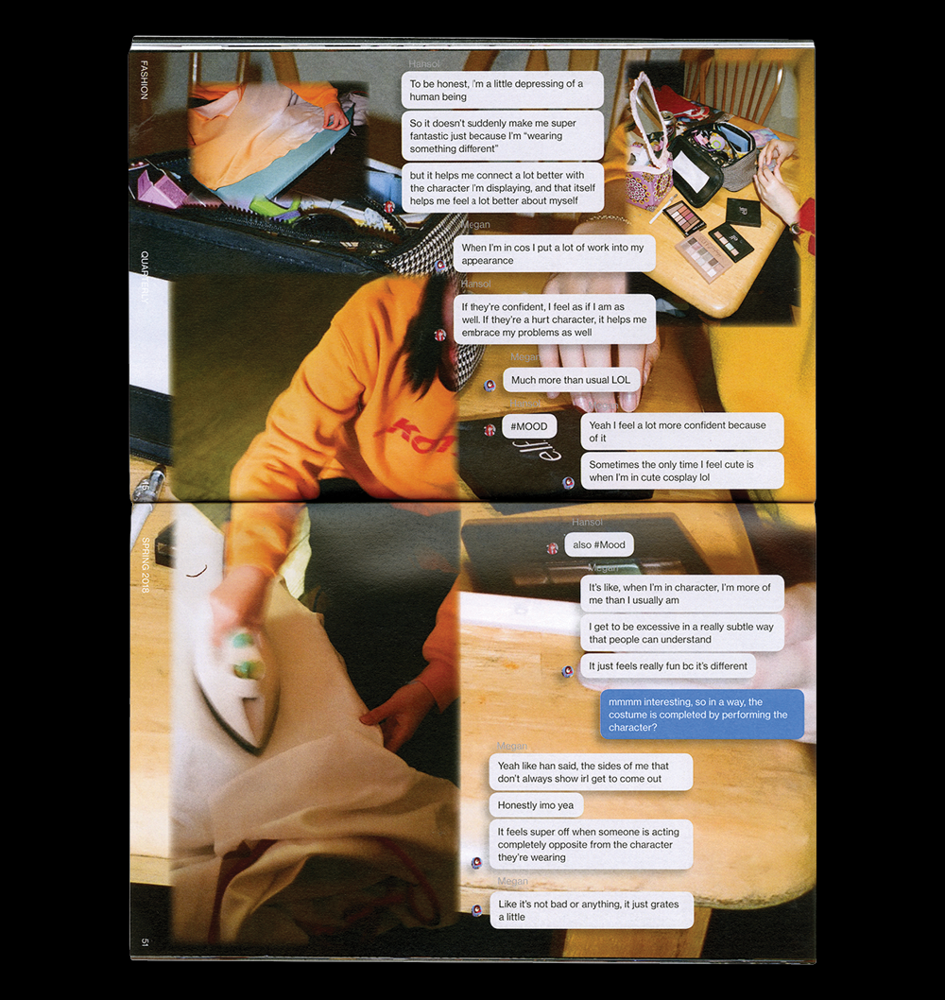
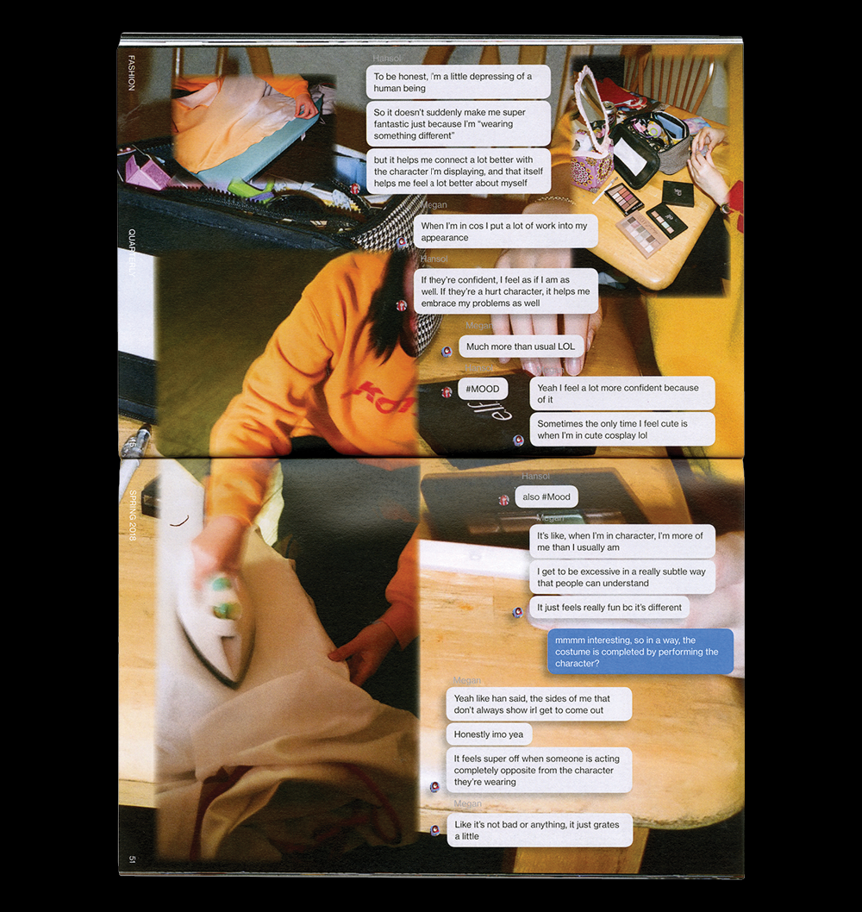
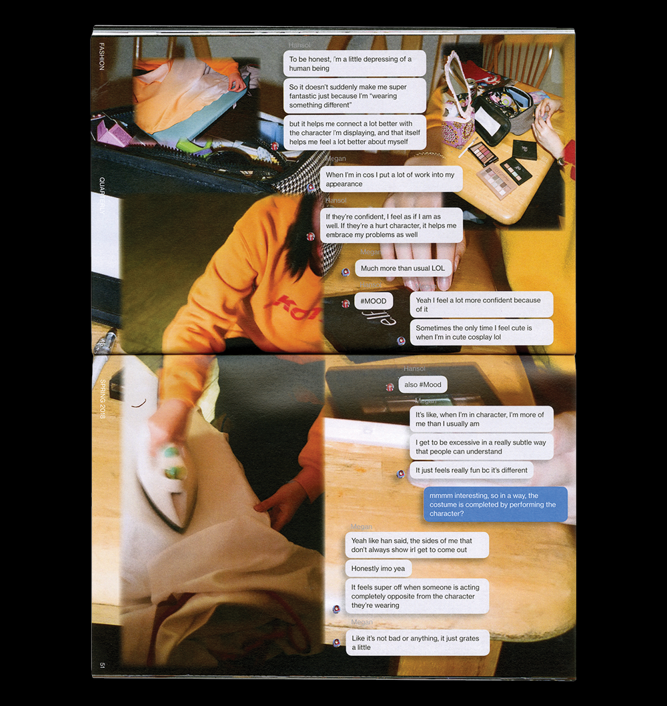

 





A student-run publication that explores the culture of style, art, and design at UC San Diego. Writing by Leanza Ellacer and Zach Roberts. Photography by Carter Duong, Lily Tang, and Dora Wang.
A lightweight photoblog developed using choo. Photography by Carter Duong.
A microsite for a weekly radio show based out of KSDT at UC San Diego. Developed using three.js.
A short game about computer programming, squiggles, and being true to yourself. Developed using Unity.
Miscellaneous sketches in 3D and 2D.